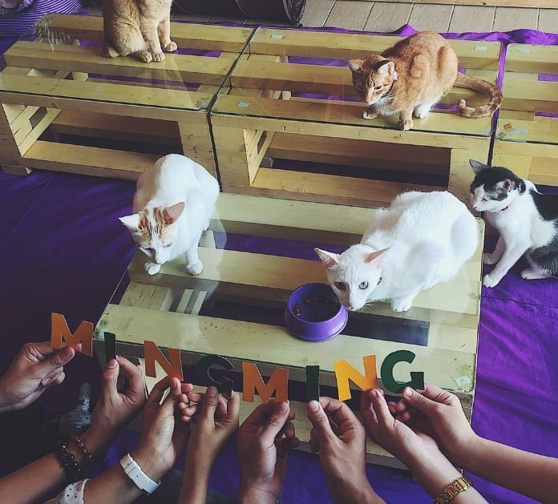

QUEZON CITY · BEST ADVOCACY STORY
Cat Cafe Manila
Cat Cafe Manila earns its place in this guide because its mission comes first. The café was built around rescued puspins, responsible interaction, and adoption, helping guests understand that local cats deserve safe and loving homes. I recommend it as a thoughtful introduction to cat cafés, especially for visitors who care about rescue education and want their café experience to support a larger cause.
| Address | 2/F 189 Maginhawa Street corner Makadios Street, Sikatuna Village |
|---|---|
| Opening hours | Verify the current operating schedule before visiting. |
| Known for | Rescued puspins, education, and adoption advocacy |
| Best for | First-time guests and rescue-cat supporters |